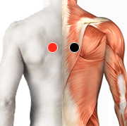

Problemas bucales
Par
cava - cava

Generalidades:
Algunos de los problemas dentales que trata el biomagnetismo está la Gingivitis (inflamación de encías), Aflojamiento dental, enfermedad periodontal y Aftas en la boca
La halitosis o mal aliento puede ser tratada con el par: cava - cava.
Estos padecimientos pueden ser provocados por algún tipo de infección que es necesario detectar mediante un rastreo. También ciertos trastornos digestivos como reflujo, problemas del hígado o disfunción estomacal pueden ser la causa.
Otros pares:
Problemas dentales: e-fragilis, neiseria gonorreae, htlv1 virus.
Halitosis: estafilococo aureus (-), enterobacter pneumoniae, yersinia pneumoniae.